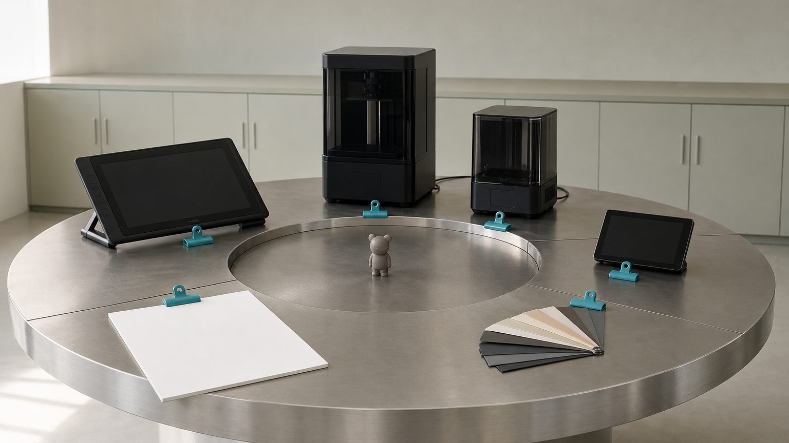
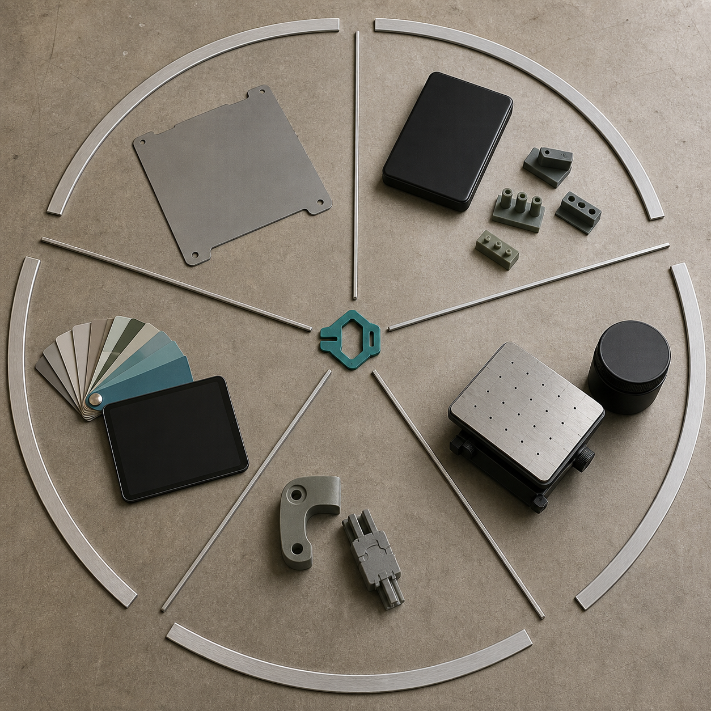
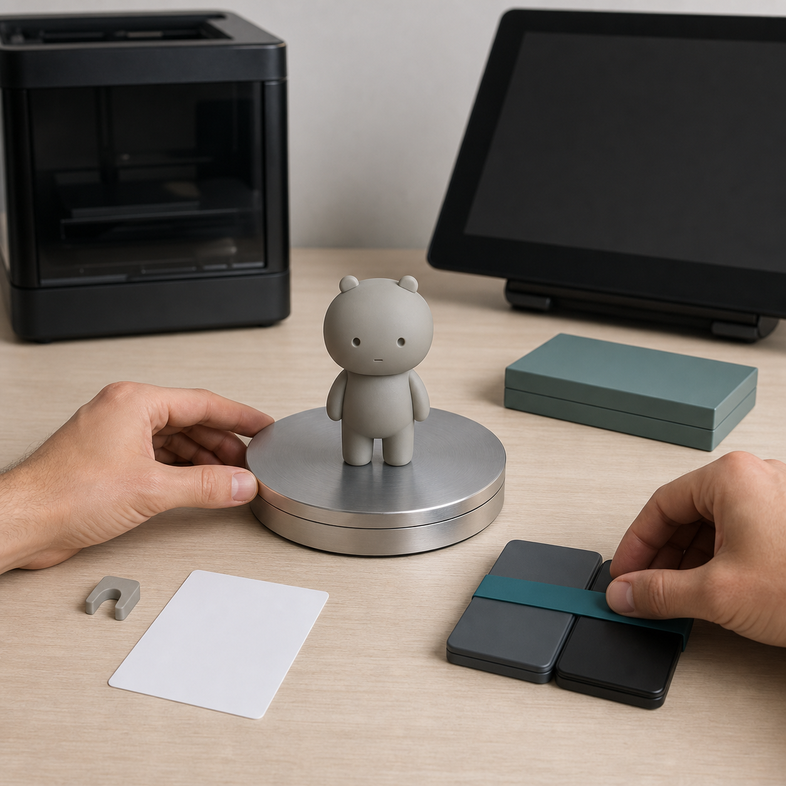
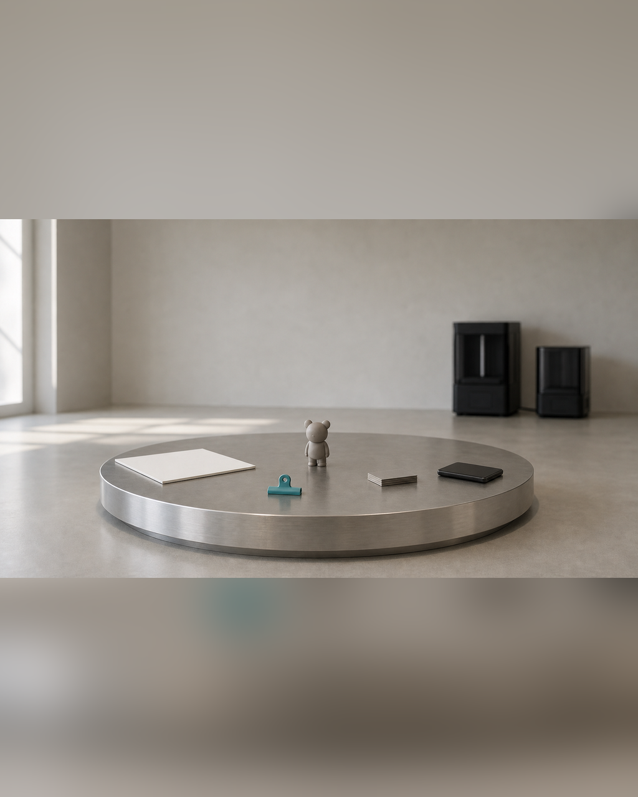

开放工作室：真实工具、样品和五天流程
开放工作室最容易被理解成设备陈列：看见打印机、工具、灰模和涂装材料，就以为已经看懂一件作品如何在五天内推进。设备是否齐全固然重要，但单独看某件工具，无法判断输入从哪里来、当前样品对应哪个文件版本，也无法知道一个问题会在哪道 Gate 被停止。 当天真正要解决的是如何用一条可复核的观察路径，把真实工具、阶段样品和五天流程对应起来。参观或直播画面中，每个对象都应回答“用于哪一步、检查什么、留下什么证据、下一阶段读取什么”；否则工作室只提供视觉热闹，不能帮助参与者判断自己的项目起点、制造风险和可完成范围。

具体问题
开放工作室最容易被理解成设备陈列：看见打印机、工具、灰模和涂装材料，就以为已经看懂一件作品如何在五天内推进。设备是否齐全固然重要，但单独看某件工具，无法判断输入从哪里来、当前样品对应哪个文件版本，也无法知道一个问题会在哪道 Gate 被停止。
当天真正要解决的是如何用一条可复核的观察路径，把真实工具、阶段样品和五天流程对应起来。参观或直播画面中，每个对象都应回答“用于哪一步、检查什么、留下什么证据、下一阶段读取什么”；否则工作室只提供视觉热闹，不能帮助参与者判断自己的项目起点、制造风险和可完成范围。
核心判断
判断一个工作室是否支持完整闭环，不能按设备数量打分，而要检查同一项目的证据能否连续对应：Day 1 的项目卡与结构输入，Day 2 的受控模型、GLB / STL 与修模记录，Day 3 的切片记录和灰模或局部样，Day 4 的色板、包装方向与素材，Day 5 的网页和内容归档。
工具、文件和样品之间必须存在可追溯关系。打印机开始运行不代表 Gate 2 已通过，灰模存在不代表项目已经完成，网页预览也不能替代真实实体状态。只有对象、版本、检查结论和下一步能互相印证，开放工作室展示才具有判断价值。
步骤或标准
可按以下六项依次观察，并为每项记录对象、当前版本、检查结果和下一阶段；任何一项都不能只用口头说明代替文件或样品。
- 先看输入与范围：核对项目卡、版权状态、正侧背或关键词参考、预计尺寸、主要用途以及主 / 备 / 降级方案，确认它们是 Day 1 / Gate 1 的受控输入。
- 再看模型与双文件：在修模设备上核对源模型版本，并分别确认 GLB 的展示用途与 STL 的制造用途；检查厚度、连接、重心、拆件和支撑记录是否对应同一版本。
- 检查切片与设备队列：查看切片参数、任务状态、清洗固化和后处理工位，确认打印任务经过 Gate 2 放行，且失败、待修和局部重打被分开记录。
- 核对实体样的作用：辨认灰模、局部样或小尺寸样具体验证了断裂、变形、细节、重心还是装配；样品必须连接到 Gate 3 结论，不能只作为成品陈列。
- 核对表达材料：检查色板、涂装状态、包装方向、说明卡和拍摄素材是否与当前实体及版权状态一致，并由 Gate 4 决定哪些内容可以进入发布资料。
- 确认数字归档与下一步：查看独立站、GLB 在线展示、版本目录和 30 天计划是否读取当前受控结果，同时写明未完成项和课后继续责任。
常见错误
以下错误会让开放工作室从可核验的流程展示退化为设备或成果陈列。
- 只拍设备外观，不说明设备前后的文件、参数与检查记录；后果是观众无法判断机器是否服务于同一项目，也无法估算真实制造与后处理负担。
- 把渲染图、打印中的模型或灰模直接称为完成作品；后果是 Gate 状态和完成度被夸大，参与者会误判五天内可达到的出口。
- 把不同版本中最好看的图片、模型和样品拼成一条流程；后果是证据链失去可追溯性，后续修正、重打和网页更新读取错误版本。
- 为了画面丰富而摆出大量工具和样件；后果是每件对象的用途与责任不清，安全、防护、队列和失败记录反而被遮蔽。
- 把开放展示写成已经发生的学员课堂或制作案例；后果是示意与事实混淆，并虚构了未经核验的参与者和成果。
与五天课程的关系
这一主题用一条观察路径串联 Day 1 至 Day 5 与四道 Gate。Day 1 / Gate 1 检查项目范围、版权和视觉结构输入；Day 2 / Gate 2 检查受控模型、GLB、STL 与可打印性；Day 3 / Gate 3 用切片记录、灰模或局部样完成实体验证；Day 4 / Gate 4 核对涂装状态、包装方向、图片、版权和成果描述。
Gate 4 通过后，下一阶段是 Day 5：把当前真实状态整理进个人独立站、GLB 在线展示、平台文案和 30 天推广计划。完成 Day 5 的当前出口后，再进入课后 30 天迭代，继续修正模型、补充素材和页面，并评估正式包装、批量复制、展览或销售准备，而不是在开放展示中提前宣称这些结果。
事实 / 案例 / 完成度边界
本文依据公开课程基线中的五天安排、四道 Gate、文件与样品要求整理。当天计划的四张图片仅用于示意真实工具、阶段证据和观察路径，不是学员案例、真实课堂、真实直播记录或已经完成的项目成果。真实案例只有在来源、授权、文件版本、设备记录和完成状态可核验时才能单独标注；示意图不能替代真实案例。
五天内的目标是按项目实际情况形成第一版可继续发展的文件、验证样和表达资料，完成度受起点、结构复杂度、尺寸、设备、材料、打印排程和修正次数影响。课程不承诺人人完成商业级精修、一次打印成功、固定实体件数、正式包装印刷、批量生产、正式展览、授权成交或销售，也不承诺所有项目达到统一完成等级。
报名入口
如果你已有 IP / 角色资产，可以在报名资料中说明现有原画、角色设定或三维文件、版权状态、希望做成的物品、预计尺寸和最需要验证的环节；不需要先自行完成全部建模、打印和发布工作。
如果你只有想法、草图或初步设定，也可以如实填写故事、关键词、参考方向、希望做成的物品和现有设备，不需要把早期输入包装成成熟项目。两类起点都从 Day 1 / Gate 1 的真实范围判断开始。公开报名地址：https://wj.qq.com/s2/27296919/9499/ 。提交资料后仍需人工确认。



课程时间：2026 年 10 月 2 日至 10 月 6 日｜青岛｜每班限 10 人
填写报名资料 →